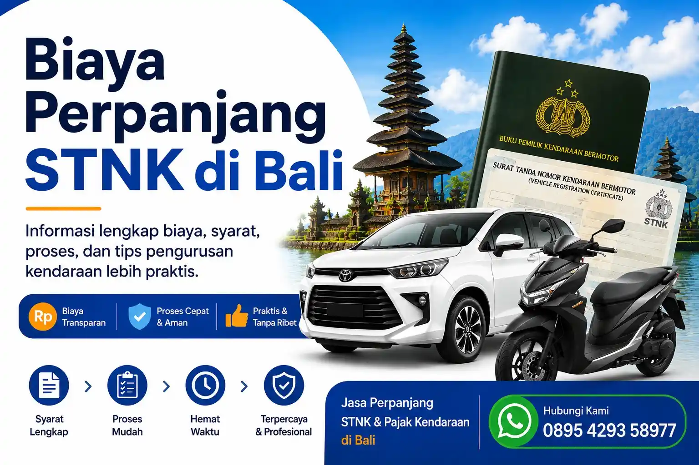

Biaya Perpanjang STNK di Bali
Perpanjang STNK merupakan kewajiban penting bagi setiap pemilik kendaraan agar status kendaraan tetap aktif dan legal digunakan di jalan. Di Bali, proses perpanjang STNK dapat dilakukan melalui Samsat sesuai domisili kendaraan maupun menggunakan bantuan jasa pengurusan agar proses menjadi lebih praktis.
Banyak masyarakat mencari informasi mengenai biaya perpanjang STNK di Bali untuk mempersiapkan dokumen dan proses administrasi dengan lebih mudah. Selain biaya administrasi, biasanya terdapat beberapa komponen lain yang perlu diperhatikan tergantung jenis kendaraan dan masa berlaku STNK.
Dokumen Perpanjang STNK di Bali
- STNK Asli: Digunakan sebagai dokumen utama kendaraan.
- KTP Pemilik: Sesuai dengan nama yang tertera pada STNK.
- BPKB: Biasanya diperlukan untuk proses tertentu atau verifikasi data kendaraan.
- Kendaraan: Beberapa proses memerlukan cek fisik kendaraan.
Jenis Perpanjang STNK
- Perpanjang STNK tahunan
- Perpanjang STNK 5 tahunan
- Penggantian plat nomor kendaraan
- Pengesahan STNK kendaraan pribadi maupun perusahaan
Faktor yang Mempengaruhi Biaya Perpanjang STNK
Biaya perpanjang STNK di Bali dapat berbeda tergantung beberapa faktor seperti jenis kendaraan, kapasitas mesin, status kepemilikan kendaraan, serta adanya denda apabila terlambat melakukan perpanjangan.
Selain itu, kendaraan atas nama perusahaan maupun kendaraan dengan status mutasi biasanya memiliki proses administrasi tambahan yang perlu diperhatikan sebelum pengurusan dilakukan.
Komponen Perpanjang STNK di Bali
| Komponen | Keterangan | Catatan |
|---|---|---|
| Pajak Kendaraan | Disesuaikan dengan data kendaraan | Berbeda setiap kendaraan |
| Pengesahan STNK | Administrasi perpanjangan STNK | Wajib saat perpanjangan |
| Pergantian Plat | Untuk perpanjangan 5 tahunan | Termasuk TNKB baru |
| Total Pengurusan | Menyesuaikan Jenis Kendaraan | Dapat berbeda tiap kasus |
Butuh Bantuan Perpanjang STNK?
Rizch Bali siap membantu pengurusan perpanjang STNK di Bali agar proses lebih praktis, cepat, dan mudah tanpa ribet.
Konsultasi via WhatsAppFAQ - Pertanyaan Umum
Syarat umum perpanjang STNK di Bali meliputi STNK asli, KTP pemilik kendaraan, dan dokumen pendukung lainnya sesuai kebutuhan pengurusan.
Ya, perpanjang STNK 5 tahunan biasanya memerlukan cek fisik kendaraan sebagai bagian dari proses administrasi di Samsat.
Lama proses perpanjang STNK tergantung jenis pengurusan, kelengkapan dokumen, dan kondisi antrean di Samsat.
Bisa, banyak masyarakat menggunakan jasa pengurusan STNK di Bali agar proses administrasi kendaraan menjadi lebih praktis dan efisien.
Keterlambatan perpanjang STNK dapat menyebabkan denda administrasi dan berpotensi menimbulkan kendala saat kendaraan digunakan di jalan.